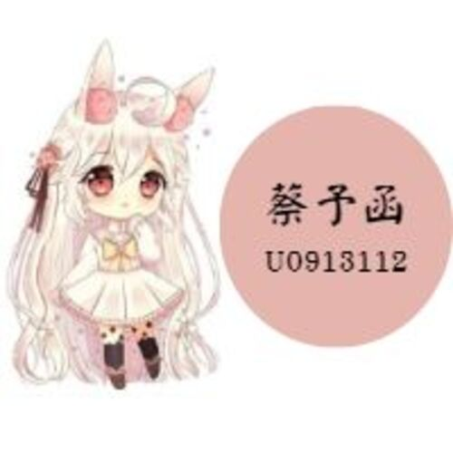
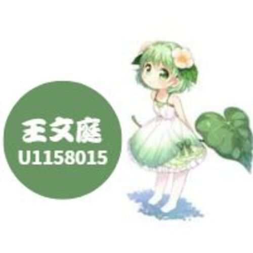

團隊成員



親子共同行動方案：
● 捐贈還可以繼續使用的書籍、用品、衣物給有需要的孩子或家庭。
● 一起參與或支持幫助無家者的組織。
● 透過繪本等方式，學習氣候變遷或能源等問題如何造成貧窮。
親子共同行動方案：
● 做好購物計畫，避免購買不必要的食材造成浪費。
● 吃當季、在地食物，支持在地小農、友善環境、公平貿易的產品。
● 醜蔬果一樣好吃，一起加入惜食運動！
親子共同行動方案：
● 把書本捐贈給有需要的學校或圖書館。
● 帶孩子到天文館、博物館、戶外走走，讓學習走出校園！
● 為什麼有些國家的女孩很早就結婚、輟學？與孩子開啟相關對話，思考解方。
親子共同行動推薦：
● 鼓勵孩子與不同文化、社會背景的人交朋友。
● 討論孩子對他人的感受，並消除對年齡、性別、種族、信仰的刻板印象。
● 到食物銀行、關注移工或無家者等非營利組織當志工。
親子共同行動推薦：
● 找出物品重複利用、修理後再用的方法，不使用也得正確回收。
● 減少商品過度包裝，支持實行循環經濟的企業。
● 全家出遊可以安排友善環境、生態型的旅遊方案。
親子共同行動推薦：
● 一起了解台灣有哪些瀕危保育類動物，牠們住在哪裡、數量為何減少？
● 參加保護原生動植物行動，守護生物的棲息地。
● 垃圾不落地，爬山踏青時帶著小袋子，把看到的人為垃圾帶走處理。